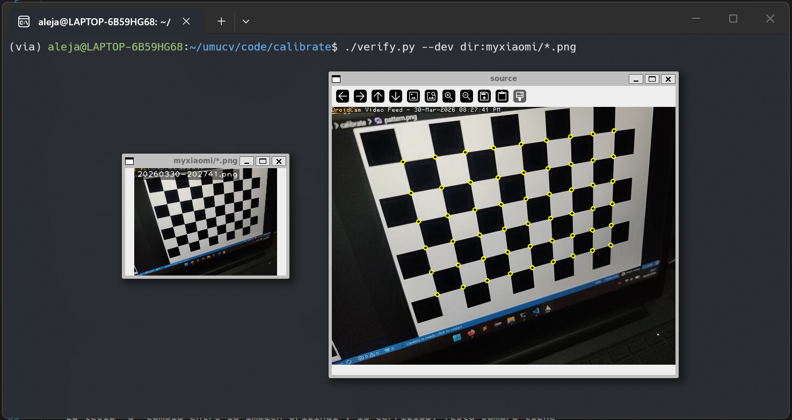
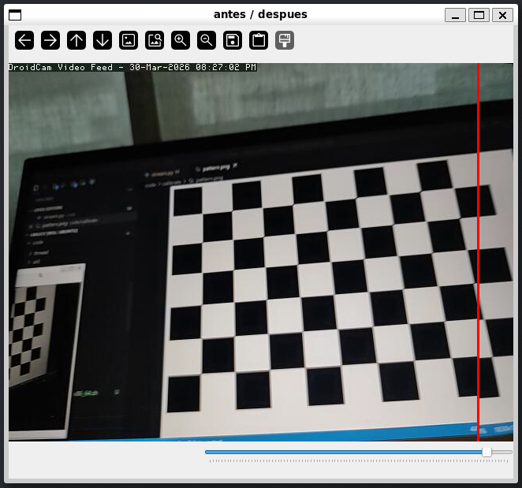
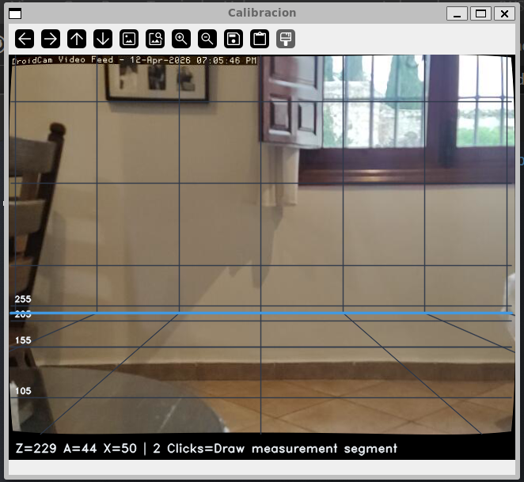

Calibración de Cámara¶
Descripción¶
El bloque de calibración abarca tres tareas: obtener los parámetros intrínsecos de la cámara mediante un tablero de ajedrez, calcular el campo visual (FOV) y desarrollar una herramienta interactiva que superponga una cuadrícula de medida real sobre la imagen usando proyección 3D.
Los scripts relevantes son calibracion/grid.py y el fichero de parámetros calibracion/calib.txt.
Requisitos y ejecución¶
Entorno
Python 3.10+, OpenCV 4.9, NumPy 1.26.
Primera ejecución
Asegúrate de tener al menos 10 imágenes del tablero desde ángulos distintos antes de calibrar. Con menos imágenes los coeficientes de distorsión son poco fiables.
Arquitectura¶
flowchart TD
A[autoStream: frame] --> B[cv.remap\ncorrección distorsión]
B --> C[draw_grid\nproyección 3D → píxeles]
C --> D{¿2 clics?}
D -- Sí --> E[Calcular distancia 3D\nentre puntos]
D -- No --> F[draw_hud + SliderPanel]
E --> F
F --> AParámetros clave¶
Matriz intrínseca \(K\)¶
| Parámetro | Valor | Descripción |
|---|---|---|
| \(f_x\) | 480.15 px | Distancia focal horizontal |
| \(f_y\) | 480.06 px | Distancia focal vertical |
| \(c_x\) | 319.85 px | Centro óptico X |
| \(c_y\) | 236.66 px | Centro óptico Y |
| \(k_1\) | 0.0558 | Distorsión radial 1er orden |
| \(k_2\) | −0.3856 | Distorsión radial 2º orden |
| \(k_3\) | 0.4551 | Distorsión radial 3er orden |
Parámetros sensibles
k2 y k3 tienen valores altos y signos opuestos — esto es normal en objetivos con distorsión en barril moderada. Un k2 muy negativo sin k3 que lo compense generaría una corrección excesiva en los bordes.
Campo visual (FOV)¶
La calibración se realizó a 640 × 480 px.
Sliders de la herramienta interactiva¶
| Slider | Variable | Significado |
|---|---|---|
| Z | w_z |
Distancia al plano de interés (cm) |
| A | c_h |
Altura de la cámara sobre el suelo (cm) |
| X | cell |
Tamaño de celda de la cuadrícula (cm) |
Parámetro más sensible: A (altura)
Un error de pocos centímetros en c_h se amplifica con la distancia: las líneas horizontales de la cuadrícula se descuadran progresivamente hacia el fondo. Ajusta A hasta que la línea base gruesa coincida visualmente con el suelo real.
Código clave¶
Proceso de detección de esquinas¶

cv2.findChessboardCorners y refinadas con cornerSubPix.
cv2.undistort. Nótese la corrección de la distorsión radial en los bordes.Proyección de cuadrícula¶
Ajuste del plano y medición¶



Decisiones de diseño¶
getOptimalNewCameraMatrix antes de remap¶
cv.undistort recorta píxeles en los bordes sin dar control sobre cuánto. getOptimalNewCameraMatrix con alpha=1 conserva todos los píxeles originales aunque aparezcan zonas negras en las esquinas. Después, initUndistortRectifyMap precomputa los mapas de remapeo una sola vez antes del bucle, de forma que cada frame solo cuesta un cv.remap (<2 ms) en lugar de recalcular la corrección en cada iteración.
| Enfoque | Ventaja | Inconveniente |
|---|---|---|
cv.undistort |
Simple, una línea | Recorta bordes sin control |
getOptimalNewCameraMatrix + remap |
Conserva todos los píxeles, <2 ms/frame | Requiere precomputar mapas |
Rayos en lugar de homografía¶
La cuadrícula podría calcularse con una homografía suelo→imagen, pero requeriría elegir cuatro puntos manualmente y solo sería válida para un plano concreto. Con rayos, dado un píxel (x, y), el rayo normalizado es [(x-cx)/fx, (y-cy)/fy, 1] y la intersección con el plano a altura c_h da las coordenadas 3D directamente. Los sliders Z y A pueden cambiarse en tiempo real sin recalibrar nada.
Medición por intersección con el plano más cercano¶
Cuando el usuario hace clic, el punto puede estar en el suelo o en una pared. El código calcula la intersección del rayo con ambos planos y se queda con el más cercano a la cámara (min por norma del vector 3D). Es una heurística razonable para interiores donde suelo y pared son los únicos planos de interés.
Validez de la calibración¶
Los parámetros en calib.txt son válidos solo para la resolución y modo de cámara con que se tomaron las imágenes (640×480). fx, fy, cx, cy escalan proporcionalmente al cambiar resolución, pero los coeficientes de distorsión k1, k2, k3 no cambian porque describen la geometría del objetivo. Aun así, lo más seguro es recalibrar si se cambia la resolución.
Limitaciones¶
Limitaciones conocidas
- La cuadrícula asume que la cámara apunta horizontalmente. Inclinaciones generan errores de medida crecientes con la distancia.
- El valor de altura A debe introducirse manualmente; un error de pocos centímetros se amplifica con Z.
- La calibración es válida solo en el modo y resolución en que se tomaron las imágenes.
- Con poca iluminación o tablero con reflejos,
findChessboardCornerspuede fallar completamente.